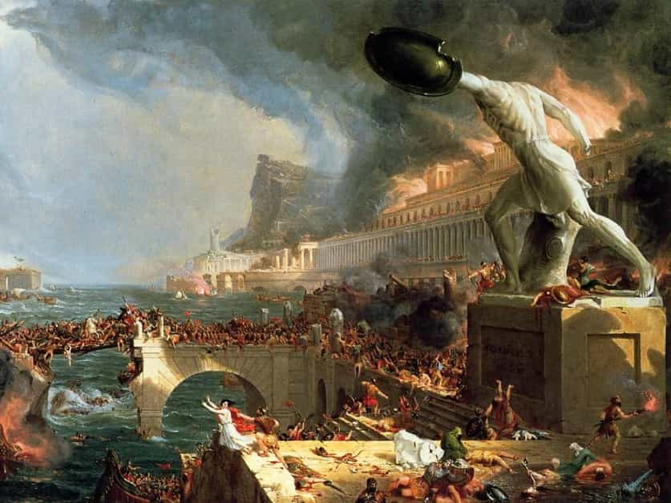

John Joseph Henry is a conservative American Catholic who believes in taking the fight to the enemy. He enjoys the married life, working, traveling, history, and learning languages.


In post-1960’s America, ‘Imperialism’ has become a byword among the educated. To support the idea of an Empire would be a Scarlet Letter for any academic in a university setting, and the rest of society has followed their lead. Having said this, I encourage you to hear me out. Here are five reasons why becoming an empire is the only way to make America great again.
Rome began as a republic, too. However, that was its infant stage. In reality Rome’s greatest achievements, militarily and culturally, came to fruition during the Pax Romana, at the height of the empire.
Look at Spain: after driving out the Moors, and with no more enemies to fight within their territory, it took Colombus and later Conquistadors (true badasses) to bring about the Siglo de Oro, giving rise to the likes of Cervantes, and mobilizing the Spaniards so that they won the battle of Lepanto, saving Christendom in the process.
Likewise, the British arrived at their cultural and humanistic crescendo shortly after the Napoleonic wars, during the Victorian era. Once again, at the height of their empire.
After their conquests, the Legionaries settled Spain, the Conquistadors settled Latin America, and the Loyalists settled Canada.
On the other hand, a mad, hysterical revolution signaled the decline of the great French Empire, having negative repercussions which we are still seeing today. Which outcome is more desirable?
The literal poster child of a society that has lost its way. It’s time to take action.
There is nothing that stands still in nature: everything is either expanding or contracting. During Teddy Roosevelt’s day, America fought to spread her culture (which was the best way to defend her values). We were expanding. By sending our jobs and factories to China and Mexico and accepting mass immigration, we have begun to contract.
As this trend progresses we see the death of the American family, and the decline of an empire that never was. Idle hands are the Devil’s workshop, and a generation of pan-sexual, Facebook-addicted atheists, without the courage to state obvious facts (i.e., that ‘trangenders’ are insane people who mutilate their genitals, or that most women would be happier as housewives) is indicative of a society with no mission. Let this be our mission. It will whip us into shape, and give us an admirable purpose.

As an American I can attest that my countrymen are raised with a bias toward democratic values, treating the Constitution like a Baptist treats the Bible. I’ve got news: Democracy is not sacred truth, and the war between idealism and realism has existed as long as America.
Take the American Revolution, a period of our history which few Americans understand. The radically idealistic liberals (the Continental Congress) spent the war years begrudging help to the realists (the Continental Army), in part because they were against standing armies as a matter of principle.
In the end it wasn’t red liberalism that won America’s freedom. It was courage, suffering, Christianity, and a desire for true liberty, which can only flourish in an atmosphere of Tradition and Common Sense, where people recognize that families are the sacred fabric of society and that every man must pull his own weight. America wasn’t invented by Jefferson in 1776, but by John Smith in Jamestown, when he decreed that “He that does not work shall not eat.”
Look no further than the French Revolution, the Irish Rebellion of 1798, the Bolshevik Revolution in Russia, The Spanish Civil War, etc… ad infinitum, to see the excesses of radical republicanism. Every time it’s the same old story: the crazies get control, and everything goes to hell. Not something to be making our end-all-be-all, in my opinion.
It’s not called red liberalism for nothing.
Still believe that Empire can’t be a force for good? Tell that to HMS Black Joke, who captured eleven slave ships in a single year.
The Romans built roads and spread Classical civilization and philosophy, along with their language. The Spaniards took the Catholic faith to Latin America, where the Church boasts great success in promoting patriarchy today. And, as much as modern Britons seem ashamed of their former Empire, it was the British who brought an end to widow-burning in India, and the Royal Navy which was far and away the single greatest contributor to the end of the African slave trade. So much for the evils of imperialism.
Men were made to build, and men of enterprise build empires. To conquer, to construct, and to defend are as innate to men as our love of women; it is something which is truly worthwhile in and of itself. Empire is natural and inevitable. The question is what kind of empire it will be: one built on Christianity and the truth that every man’s house is his castle, or upon atheism, Islam, or tyranny. Which brings me to my last point….
I’ve got news for you: if America doesn’t step up and assert itself, somebody else will. The Chinese, the Muslims, or a newly empowered globalism will leap to fill the void which nature hates. That’s how things work in the jungle: you’re either influencing or being influenced.
Not just in America but all over the West, people are surrendering. Where Americans or Europeans should be influencing and fighting, we have laid down our arms. Whether they are giving up their daughters to be groped by immigrants in the Stockholm metro, or letting Muslim terrorists bomb our cities while we refuse to even name them, the West is on the retreat. What are we expecting to be the result of this cowardice?
I don’t know about you, but I don’t want my children to speak Mandarin, or eat cats. I don’t want my sons to forget about Christianity, or my daughters to be part of some Muslim’s harem. Influence or be influenced. Conquer or be conquered. Fight, and win, or die.

They won’t be shit-hole countries for long under new management.
In a way, I can respect the humility and simplicity implied in isolationism. But I think we can all agree that after the fifty years of West-hating that have followed the Sixties, the last thing Americans need is to be more humble. At the end of the day, isolationism is an ideology, and ideologies are beta. Real men see reality as it is, and act accordingly.
The choice is clear: either organize our society towards aggressive expansion, or let the cultural Marxists continue their long march through the hearts and minds of America.
Want to be on the “right side of history?” Join the Empire. Join, or die.
Read More: How America Is Becoming A Real Life Sci-Fi Dystopia